|
|
| 00 | 01 | 02 | 03 | 04 | 05 | 06 | 07 | 08 | 09 | 10 | 11| 12 | 13 | 14 | 15 | 16 | 17 | 18 | 19 | 20 | 21 | 22 | 23 | 24 | 25 | 26 | 27 | 28 | 29 | 30 | 31 | 32 | 33 | 34 |
THE ELECTRON
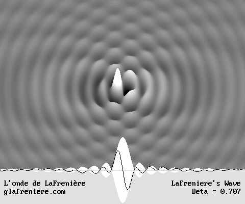
This wave is an electron.
Mr. Jocelyn Marcotte's equations below are fundamental.
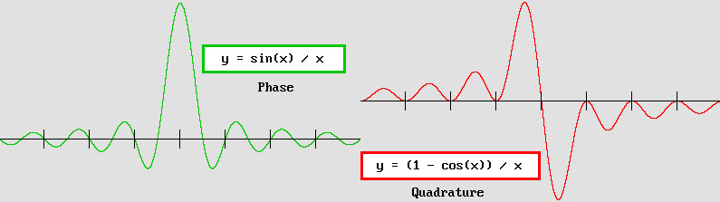
x = 2 * pi * distance / lambda
y stands for amplitude.
Please note that amplitude is normalized to y = 1 at the center for phase and to y = 0 for quadrature.
Of course, those equations are well known in the math literature.
However, they had never been related to the electron.
ELECTRONS ARE WAVES
|
The Huygens Principle. I have been fascinated by optics and wave phenomena since my early age. So I know well that the Huygens Principle is always highly reliable. Around 1995, personal computers finally became accessible, fast and practical. I then elaborated a new algorithm whose goal was to perform the summation of Huygens' well known wavelets inside a 3-D space. I was working on the Airy disk, which is the amazing interference pattern which is present at the focal plane of any convergent lens or telescope mirror. The program was a hit. The results below represent a very seldom shown Airy disk. It should behave like this only for a very wide 180° aperture angle. This means that instead of the usual narrow light cone, the source is a full hemisphere. Look at this! |
|
|
The Airy disk for a 180° aperture angle.
It can also be considered as one half of an electron. Rightward waves only are present.
Mr. Marcotte's equations above predict exactly the graphics shown in the lower right corner.
|
Discovering the electron. While working on this, I already knew that matter and especially electrons should be made of spherical standing waves. I was also aware that such waves should undergo the Doppler effect, allowing them to move freely at variable speeds. However, I did not reveal this major discovery because I feared (I was wrong!) that a better knowledge of matter, considering the amazing forces involved, would lead us to a devastating Apocalypse. It is a well known fact that most discoveries such as radioactivity were always followed by more and more powerful weapons. I could never find any indication that this could be true for the wave nature of matter, though. So, in 2002, I wrote a book which was exempt of any mystery: Matter is made of Waves. It was not the case for another book written in 2000: The Theory of Absolute. I had to make it very evanescent about the wave nature of matter (it is not my discovery, but I was the first and I am still the only person who can explain all about it: electrons, matter, forces, mechanics). My goal was simply to restore Lorentz's Relativity, whose concept is absolute. Although this point of view leads to the same predictions as Einstein's, it should be emphasized that his Relativity, while it proves to be true, is nevertheless the result of our errors while recording phenomena. I discovered Mr. Milo Wolff's site in July 2003. Many observations appear to be correct, but I must strongly disapprove many of his ideas here, and especially the WSM (wave structure of matter) ideology using philosophy in order to make scientific discoveries. This is weird. But Milo was right at least in one point: his concentric spherical standing wave showed a full wavelength core. Both static and Doppler models, which I presented in 2002, showed only a half-wavelength core. This may seem strange, but exploring a new world is not obvious. I simply had not yet realized the similitude between the electron and the Airy disk. So I immediately returned to my Airy disk program and I found that Mr. Wolff was right. I obtained this: |

Two opposite 180° Airy disks adding themselves produce a spherical standing wave system.
The full lambda core indicates that a pi phase shift (actually a wave acceleration) must occur inside.
In order to achieve this, waves traveling through the core must behave in a very unusual way.
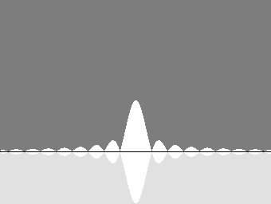
Mr. Milo Wolff's static electron and its full lambda core, according to the Huygens Principle.
|
LaFreniere's wave. This Doppler moving electron is my discovery. It was shown in my book and I called it LaFreniere's Wave when I uploaded my first Internet web pages in September 2002. The electron can move at any speed from 0 to nearly the speed of light through the aether because it undergoes the Doppler effect (or the Lorentz transformations, which is the same). In spite of my desperate attempts to make him recognize that, M. Wolff never did. I also showed before anyone else the correct diagrams for it. Unfortunately, Mr. Marcotte's formulas were missing, but I succeeded anyway. As a matter of fact, the Huygens Principle is far more important and relevant as a tool. The results are a convincing proof that the system should behave this way. This wave shows all of the electron properties. The electron's properties are well known. The list is astounding. It is so small that it has no apparent dimension. Its electrostatic charge is negative. There is also a positive antiparticle, the positron, which exhibits exactly the same properties except for the opposite charge. Its wave properties are now a well admitted fact. It can accelerate, slow down and change its direction. It can act and react as a result of an apparent contact, but also at a distance. It contains intrinsic energy according to mc^2, and additional kinetic energy according to m(gamma – 1)c^2 while moving as a result of Lorentz's mass increase. Except for the spin, which is either –1/2 or +1/2, all electrons are rigorously identical. In addition, the electron is the main player for a lot of phenomena such as magnetic and electric fields, light and radio waves emission, and chemical reactions. It can stabilize itself around the nucleus to form an atom, and it can bind molecules together. Finally, it is a well known fact that electron and positron collisions produce quarks and gluonic fields. This indicates that in this case electrons and positrons involved do not really annihilate. They should most likely be hidden but still present inside quarks and have their standing waves joined together as gluonic fields. This strongly suggests that matter (or any other particle) is solely made of electrons. This is a huge responsibility for so small a particle, but the electron magnificently takes up the challenge. This web site explains how it is possible. The moving spherical standing waves calculus. So the electron appears to be the equivalent of a very special Airy disk whose aperture angle is 360°. As seen above, just one hemisphere becomes the source of traveling waves, but adding the opposite one rather produces standing waves. This is Milo Wolff's unmoving electron. Now let's see how the Doppler effect should transform it. Using the Huygens Principle, I submitted all of Huygens' wavelets to a Doppler effect. The algorithm then becomes a bit more complicated because the wavelength must shorten regularly from 1–beta forward to 1+beta backward (beta = v/c). The computer produced the following result, which is correct only along the displacement axis: |

The moving electron's axial waves, using the Huygens Principle.
This was confirmed in July 2006 by Mr. Jocelyn Marcotte thanks to his 3-D optimized wave algorithm.
|
Marcotte's equations. Mr. Jocelyn Marcotte informed me in January 2006 that he had found a new simpler algorithm for the aether. It is different from Mr. Philippe Delmotte's, the first inventor, because square or sawtooth waves are propagating normally, while Delmotte's produces some sort of heat, a local vibration of the "aether granules". This does not mean that it is better. It is simply different, but this suggests that many options are possible for an ideal aether. However, in both cases, sine waves behave normally, much like the sound propagates inside a solid and homogeneous substance such as quartz. Mr. Marcotte graduated in 1989 as an electric engineer from École Polytechnique, Université de Montréal, Québec, Canada. He is obviously a champion in computer programming, because he firstly had to handle the new FreeBASIC programming language. He then immediately succeeded in testing my moving electron inside his own 3-D Virtual Aether. Among others, he also tested the evolution of a standard Gaussian impulse, and he seemed to be the only person on Earth who understood my Airy disk algorithm (up to now, just three people did). By March 2006, he informed me that Milo Wolff's static electron could be represented using the equation below where x stands for phase, distance or delay in radians: x = 2 * pi * distance / lambda. Then amplitude is given by: y = sin(x) / x This is a well known equation in the math literature. It is also known as the sinc(x) function, which is short for sinus cardinalis. But it had never been related to the electron, albeit it is a solution of Bessel's spherical function. The singularity for x = 0, y = 1 is also well established. I was using the equivalent since the beginning: y = sin(2 * pi * distance / lambda) / distance. The distance (x is more exactly the phase as a result of the delay) not being in radians, the wave shape for the electron core was wrong, though. On July 27, 2006, Mr. Marcotte finally found that the two wave sets traveling in opposite directions and producing the electron could be calculated according to the formula below, for quadrature (pi / 2 phase): y = (1 – cos(x) ) / x This formula is also well known in the math literature. As far as I know both equations were mainly used in order to find the precalculus limits before performing trigonometric differential calculus. Those formulas are awesome: |
Jocelyn Marcotte's equations and the resulting graphics.
|
It should be pointed out that the cosine indicates quadrature (pi / 2 phase), which is normally the highest amplitude point. However, the electron central antinode is an exception because it is a full wavelength wide. A pi / 2 phase shift occurs in the center, and so the maximum amplitude there is indicated by the sine function while the cosine indicates the zero level. Anywhere else the normal amplitude level according to the distance remains the rule, though. If all happens like I presume, in the future, those equations will be recognized as the first equations of all. They are fundamental. Rotation. Mr. Marcotte soon found that these equations could show the wave rotation step by step from 0 to 2*pi. He had to introduce a t time (also in radians, from 0 pi to 2 * pi), and join them together like this: y = (cos(t) * sin(x) – sin(t) * (1 – cos(x) ) ) / x y = (cos(t) * sin(x) + sin(t) * (1 – cos(x) ) ) / x (opposite direction)
Mr. Philippe Delmotte found this simplification in September 2006 : y = (sin(t + x) – sin(t)) / x
I made two programs showing all this: Aether06_Marcotte.exe Source code : Aether06_Marcotte.bas Aether06_Marcotte_Doppler.exe Source Code: Aether06_Marcotte_Doppler.bas You may freely copy, distribute and even modify them. Please remember that the new 2008 Compiler for FreeBASIC (version 0.20.0b) was released with some new requirements. Gosub keyword is not allowed any more and variables including integer must be declared. However, all previous programs will still work properly on condition that they are edited as follows: #lang
"fblite" Option
Gosub The FreeBASIC IDE editor is available here: http://fbide.freebasic.net/ Here is a screenshot from the first program: |
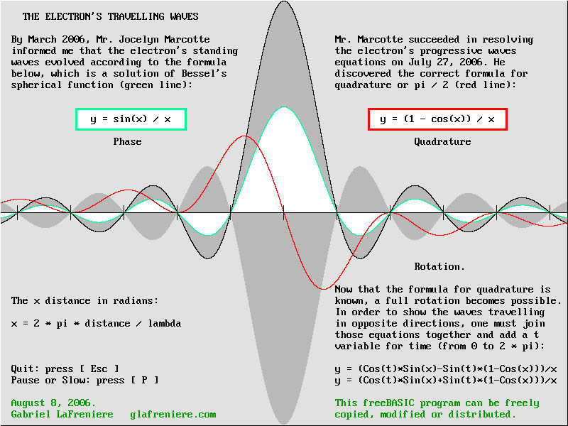
A screenshot from the program showing Marcotte's equations.
I also made an AVI animation showing this: Aether06_Marcotte.avi
|
The Doppler effect. The on-axis regular Doppler effect is quite simple: 1 – beta forward and 1 + beta backward (beta = v/c). In addition, the Lorentz transformations indicate that the electron frequency should slow down, producing a longer basic wavelength. I applied those modifications to Marcotte's equations in order to show how its standing waves should behave while the electron is moving. Surprisingly, the well known envelope showing nodes and antinodes is still present. The electron contraction. Despite the longer basic wavelength, the envelope containing nodes and antinodes rather contracts according to Lorentz's contraction factor. This is consistent with Lorentz's first equation. More energy means more mass for the accelerated electron. Lorentz also predicted that the electron mass should increase according to the gamma factor. This was soon verified by M. Kaufmann. The point is: if the emitter accelerates, the forward wave amplitude increases much more severely then it is reduced backward. The Doppler program (see below) shows that the electron amplitude indeed increases at high speed. So its energy, hence its mass, increases. This also indicates that the gain in mass according to the gamma factor is pure kinetic energy: E = m(gamma–1)c^2, as a consequence of the Doppler effect. However, this gain in energy must be measured by an observer at rest. Any instrument moving along with the electron would record wrong data because the Doppler effect is unnoticeable inside the same frame of reference. This was discovered in 1842 by Christian Doppler himself... Here is a screen capture from the Doppler program: |
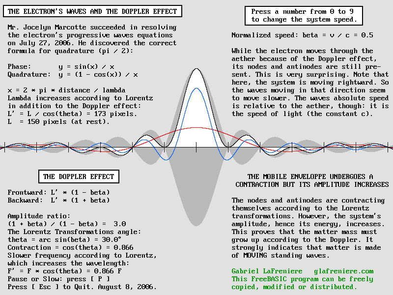
A screenshot from Aether06_Marcotte_Doppler.exe Source Code Aether06_Marcotte_Doppler.bas
See also Aether06_Marcotte_Doppler.avi
THE ELECTRON DOPPLER EFFECT
|
The Lorentz transformations indicate that a "local time" takes place inside any moving system. Actually, this means that the electron wave phase should vary along the displacement axis. The phase is retarded forward according to the distance to the center. Waves are rather pulsating in advance at the rear. The effect on the moving electron is obvious. Its standing waves no longer pulsate everywhere simultaneously. So a phase wave whose velocity is 1 / beta (in wavelength per period units) becomes visible. The normalized beta speed equals v / c, hence the speed of light in beta units becomes c = 1. And because the local time is the same everywhere on a transverse plane, this phase wave is plane. It is clearly noticeable (see the animations below) in the form of vertical stripes moving forward, always faster then the speed of light (1 / beta). The electron and the Lorentz transformations. The Lorentz transformations can be simplified using a theta angle which equals arc sin(v / c):
Lorentz's Doppler trigonometric equations.
For example, lets suppose that a material body is moving at 86.6% of the speed of light. Then beta = .866 and theta = 60°. The first part of the first equation above means that this material body will contract to one half of its normal length (cos 60° = .5). Note that this occurs only along the displacement axis. The second part indicates that this body will have moved from x = 0 to x = .866 light-seconds (sin 60° = .866) after a one second delay. This is quite obvious: a speed of .866 light-seconds per second surely means that it will move to .866 light seconds after 1 second. One does not really need Lorentz's equation to understand this! It should be emphasized that Lorentz established that transverse distances never change: y'=y; z'=z. This indicates that the electron wavelength along those axes should be constant. Because a transverse Doppler contraction according to g normally occurs, the electron frequency must slow down according to the same g factor. I wrote a program showing that this produces a longer basic wavelength which cancels the transverse wavelength contraction: Electron_Doppler_effect.bas Electron_Doppler_effect.exe
Relativity. – Moving clocks are ticking slower because they are made out of electrons whose frequency is slower. – Matter does not contract on transverse y and z axes because the electron transverse wavelength does not change in spite of the Doppler effect. – Matter contracts along the displacement axis because the electron axial standing waves contract according to g. Standing wave contraction is still not so well known, yet it is undisputable. Now, the Michelson interferometer absolute contraction (which was wrongly ruled out by Poincaré and Einstein) must be reconsidered because the electron really binds molecules according to its wavelength. – Any moving observer cannot detect this Doppler effect because it is perfectly symmetrical. The electron forward wavelength for beta = .5 is (1 – beta) / g = .577 * lambda while the backward wavelength is (1 + beta) / g = 1.732 * lambda. Note that 1 / .577 = 1.732. This is not the case for the normal Doppler effect. But here, the slower frequency and the resulting reciprocity will fool any moving observer trying to detect the Doppler effect. I know that you will seriously doubt this. So I wrote the Ether14.exe program (source code Ether14.bas) in order to prove it. This program is highly consistent and reliable. It shows that any observer moving with the system at the same speed will be unable to measure his absolute speed through the aether. He will always think that he is at rest. He will rather think that a system which is truly at rest is moving. This is what Relativity is all about. No more mystery. No more tricky reasoning. So forget about inane ideas such as space contraction and time dilation. This is indeed a great discovery, and it is undisputable: the Lorentz transformations are nothing else but the mathematical expression of electron's very special Doppler effect. Please examine my program Ether17.exe (source code Ether17.bas): the Doppler effect is really generated by the modified Lorentz equations shown above. The phase wave. So the phase wave is a consequence of the t' time in the Lorentz transformations. Look at those animated diagrams showing the moving electron at different speeds. Assuming that the electron accelerates, intervals between vertical stripes (which indicate a phase shift) become more and more narrow, and the stripe speed slows down until it is finally very near to c: |
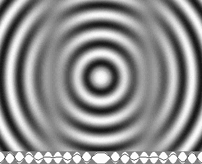 |
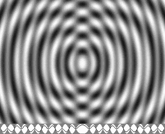 |
| v = 0,1 c | v = 0,5 c |
The moving vertical stripes indicate a phase shift as a result of Lorentz's "local time".
|
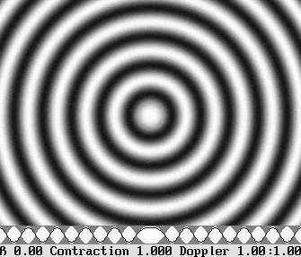 |
The accelerating electron also shows the nodes and antinodes contraction.
The phase shifts occur on vertical planes regularly spaced according to g * lambda / beta wavelengths.
This is a consequence of Lorentz's second equation..
The result is a "phase wave" moving at 1 / beta wavelengths per period, or light-seconds per second.
|
It should be pointed out that my "Time Scanner" conveniently exploits this phase wave in order to reproduce the Lorentz transformations. For example, scanning concentric waves moving inwards or outwards will add a Doppler effect to them. Surprisingly, it will also transform Milo Wolff's static electron into my moving electron. This Time Scanner is another invention of mine. It proves that the Lorentz transformations are simply a Doppler effect involving a slower frequency. |
THE VIRTUAL AETHER TO THE RESCUE
|
Mr. Philippe Delmotte. The Virtual Aether is Mr. Philippe Delmotte's brilliant invention (June 2005). It is a computerized virtual medium capable of reproducing any wave phenomenon. Its algorithm supposes that the aether is made of an infinite number of "granules", which can vibrate in accordance with Hooke's law. Thus those granules must initially contain kinetic energy, and also inertia, which can be seen as a memory of its precedent energy. In addition, this energy can be transmitted to the nearest neighbors. The program algorithm is remarkably simple. Believe it or not, this pure jewel needs only three program lines! M. Jocelyn Marcotte. On July 10, 2006, Mr. Jocelyn Marcotte succeeded in experimenting my Doppler moving electron. Even better, he used the Lorentz transformations in order to reproduce the Doppler effect. Those transformations are not about a space-time distortion. They more simply predict the way on-axis waves contract and exhibit local phases producing a "phase wave". Mr. Marcotte used his own Virtual Aether algorithm (see WaveMechanics04.bas), which is different from Mr. Delmotte's, in a 3-D space. In my opinion, this experiment will be related in the future as a memorable achievement. It was the ultimate proof, showing that this amazing wave can exist. Because today's science is afflicted with so many errors, this new discovery will launch a severe revolution in the world of physics. Mr. Marcotte's program displays an electron moving as predicted, but alas inside a limited 500^3 granules aether cube. In a few years, computers will run faster using multiple core processors and more memory. Then new programs using advanced code and powerful graphic cards will deliver much better results. Clearly, the Virtual Aether results are consistent with those using the Huygens Principle. The graphics below is a screenshot from Mr. Marcotte's 3-D program. Please note that the on-axis wave structure is identical to that obtained with the Aether06_Marcotte_Doppler.exe program shown above. The overall wave structure is also identical to that obtained with the Aether_10_Marcotte.exe program, which shows that Mr. Marcotte's equations can reproduce the whole electron structure: |
|
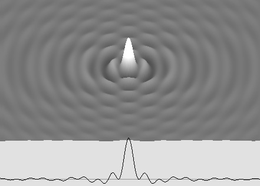 |
This is a screen capture from Mr. Jocelyn Marcotte's 3-D (cubic) Virtual Aether program.
And here is a 500 images AVI animation produced thanks to Mr. Marcotte's program.
See the electron moving freely to the right without any mathematical intervention.
Unfortunately, without aether waves traveling through it, no amplification can occur and it vanishes rapidly.
We will need a much larger aether in order to produce a more satisfying experience.
However, this is a flawless demonstration: this wave system is possible.
|
The electron is not infinite. Without incoming energy, the electron would still emit spherical outgoing waves. So it would rapidly fade out. Obviously, it needs replenishment. This is accomplished by powerful and constant aether waves. Traveling waves penetrating through standing wave antinodes are deviated because of a lens effect. A small part of the energy is transferred to the standing waves. This constantly refilled energy allows the electron to exist forever. Outgoing spherical waves weaken according to the square of the distance law. In spite of this, the light from a star, for instance, can travel for billions of years, almost infinitely. It never totally disappears. The electron too produces outgoing spherical waves. Those are regular traveling waves. Because the electron is rather made of standing waves, amplitude can no longer be the same everywhere in both directions, making them "partially standing waves". Finally, even farther, just outgoing traveling waves remain. The diagram below shows how the transition between those three states is possible: |
|
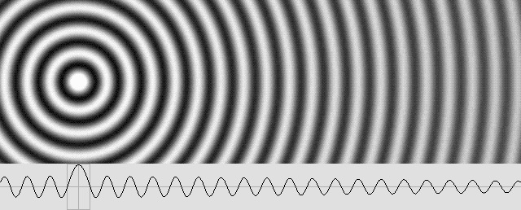 |
The electron is not made of pure standing waves.
Far from the center, standing waves are progressively replaced by traveling waves.
|
Radiation pressure. Obviously, while it is accelerating, slowing down or changing its direction, the electron cannot use its incoming waves any more. Its focal point is not compatible with their future position any more. However, the radiation pressure mechanism can overcome this problem. Waves emitted by an electron will inevitably encounter those incoming from all other electrons, especially on the axis joining them. This will produce a very special set of standing waves, a field of force, which will also be amplified by aether waves. Half of the resulting energy is then returned and focused directly towards both electrons which created the field. Programs to come will show clearly how and why this phenomenon is possible. Those fields of force are emitting focused and powerful traveling waves towards the electron. And because their phase and wavelength do not necessarily coincide, the electron will progressively change its position according to them. Because the wave's amplitude is higher near the center, it turns out that half of the electron energy may be present inside a very small sphere, maybe the size of an atom. There is enough space for thousands and even millions of wavelengths, though. The other half may expand inside a much wider sphere. The amplification process can be seen as the production of an infinite number of Huygens' wavelets. According to Huygens, the wavelets' addition must create a wave front wherever their phases coincide. Clearly, incoming wavelets can produce standing waves, but outgoing ones can only produce outgoing wavefronts. It turns out that the wavelets' summation, hence new energy, is far greater near the center. It does not obey the square of the distance law. This indicates that very far from the electron, permanent standing waves compatible with the core phase cannot exist any more. The Virtual Aether is a new tool which can show how a limited number of wavelets will behave. The diagram below is a good example: |
|
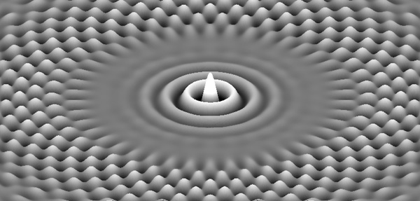 |
Philippe Delmotte's Virtual Aether (2-D here) allows one to reproduce any wave phenomenon.
This diagram suggests that the electron, assuming that it is amplified, must be finite.
This is a very provisional result, though. We will slowly but surely improve our methods.
THE ELECTRON SPIN
|
One wave. Two particles. Four phases. Standing waves exhibit nodes where the medium pressure remains constant, and antinodes where negative and positive energy alternate. They produce regularly spaced nodes and antinodes whose distance is a half-wavelength, but in the meantime the medium pressure is the same everywhere and the system seems to disappear. The point is that such antinodes appear twice per period. This means that while a standing wave system is producing a positive antinode at a given x coordinate, another perfectly synchronized system placed crosswise can rather produce a negative antinode there. Both systems being identical, their pulsating period is not for an observer placed there. So this is a relative point of view. All electrons are perfectly identical, but their unique central antinode is a privileged one. The amplitude there can be positive while it is negative inside another one, although all antinodes will be present simultaneously. This means that while one core is positive, another one can be negative. In other words, its phase is pi shifted with respect to the other one. In the meantime, all other antinodes are present, but their position is lambda / 2 shifted. Finally, two sorts of electron are possible. The electron spin does not refer to a mechanical rotation. It is the consequence of a phase rotation, and in order to achieve this all electrons must be perfectly synchronized. In addition, two times per period, such synchronized standing waves seem to disappear because the medium pressure is uniform everywhere. This is called quadrature, which can be either pi / 2 or 3 pi / 2. This indicates that there is some place for two other particles, two sorts of positrons, whose antinodes also appear simultaneously. Assuming that electrons can synchronize themselves mutually, all positrons in the vicinity will less or more rapidly transform their phase and become electrons. The atomic structure makes it so that electrons are always nearer one from another, while positrons are also grouped. Moreover, the proton structure supposes that its three quarks should produce a pi / 2 phase shift in its center, making a hidden positron very stable and comfortable there. The spin effect. Two electrons close together behave normally in spite of the spin difference. But up and down spin produce opposite magnetic fields when the electron standing waves are adding to the positron's. A surprising unidirectional radiation appears, whose direction determines the north and south pole. This means that one hydrogen atom alone is certainly magnetic. It is a dipole, and the sun's surface clearly proves this. However, the hydrogen molecule is made of two hydrogen atoms. Because it is not magnetic, it should contain two electrons whose spin is +1/2 and –1/2. For the same reason, any atom should contain an equal number of spins, which should be placed on opposite sides. Otherwise, the resulting atom shows a residual polarity which modifies its chemical properties. This is partially the cause of Pauli's Exclusion Principle. The electron spin (up and down, or +1/2 and –1/2) is the consequence of a phase rotation. It can be either –pi/2, pi/2, 3pi/2, etc. The positron's quadrature is rather 0 pi, pi, 2 pi, etc. The word spin indicates a mechanical rotation, but this would suggest an axis which was never demonstrated. Moreover, such a real spin is unlikely to be possible because the electron is so small that it can be seen as a point. So the spin is the wave period. Here is a diagram showing this: |
|
|
Two sorts of spin for the electron and two more for the positron.
THE ELECTRON WAVELENGTH
|
The Wave Structure of Matter. Because matter consists of waves, or at least exhibits wave properties, one should realize that its structure should be a Wave Structure. So the electron wavelength is definitely given by well-known formulae on wave phenomena such as the Airy disk and the Fresnel-Fraunhofer diffraction pattern. Below is the axial diagram for a standard Airy disk. |
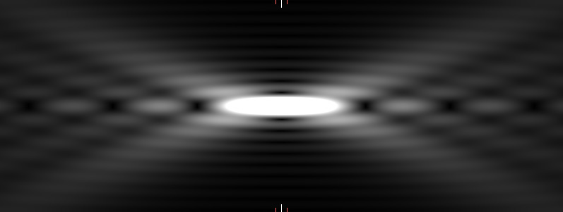
The Airy disk axial structure.
Please note the regularly spaced black zones on each side of the focal plane.
|
The Airy disk structure leads to the atomic nucleus structure. Considering the structure of a proton and that of a neutron, it becomes clear that they cannot join together unless their quarks perfectly fit inside the Airy disk structure. And they very likely should alternate in order to minimize the proton's repulsive charge. Except for the positive charge, which may be explained by the presence or an additional positron, protons and neutrons are almost identical because they contain three quarks. Their mass is also quite similar. A quark is made of two electrons unified by a gluonic field. Finally, because the black zones are radiation-free, they are the perfect place for capturing those electrons. In addition, this strongly suggests that the distance between electrons inside a quark should match the distance between the two first black zones on each side of the focal plane. The bright white central zone is the result of the gluonic field inward radiation. Incidentally, far from the focal plane, those black zones become weaker. That is why very large nuclei become unstable. This diagram shows that for relatively wide apertures (f/1.2 here), this distance is about 20 times the electron wavelength. But it would be much longer for narrower aperture angles. Unfortunately, the exact angle is very hard to figure out because the gluonic field energy distribution is not that of a regular lens or telescope mirror. Thus the electron exact wavelength remains a mystery. So far. The Fresnel-Fraunhofer diffraction pattern leads to the atomic structure. Below is the axial diagram for the standard Fresnel-Fraunhofer diffraction pattern, which is easily observable using a laser beam passing through a 5 or 10 mm hole (about 1/4"), or the beam generated by a star as seen inside a pinhole camera. |
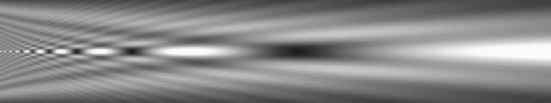
The Fresnel-Fraunhofer diffraction pattern.
The black zones are not regularly spaced any more.
They rather suggest the Balmer series.
|
The Wave Structure of Atoms. The electron wavelength may also be given by Fresnel's formula: L = r^2 / (n * lambda) Fresnel's number n = 1; n = 2... is an integer indicating the black zones position. L stands for the atomic layer distance and r is the radius of the radiating area. The black zone on the right shown above is the last one, whose distance is more simply given by: L = r^2 / lambda The important point is that the external atomic layer (except for the one responsible for chemical bindings) should also match this distance, and once again the electron wavelength should be given by: Electron wavelength = r^2 / L The radius is probably that of a quark, although it could also be that of the whole atom nucleus. More recent studies about multiple emitters (large nuclei containing 200 protons and neutrons consist of about 1200 electrons regularly spaced inside a 3-D space) indicate that the basic diffraction pattern for only 4 emitters, assuming that they are placed crosswise, may be superimposed and produce similar patterns for any number of identical structures on condition that all spaces are the same. So the best way to obtain the electron wavelength will be to investigate multiple and synchronized emitters in a 3-D space. Then all possible wavelengths will have to be compared to the Airy disk structure shown above in order to select which one produces compatible results. |
UNCERTAINTY
|
The Stern-Gerlach Experiment. In 1921, Otto Stern and Walter Gerlach conducted an experiment using fast moving silver atoms (47 electrons and protons) passing through a magnetic field. The goal was to examine how the last unpaired electron would behave. They found that the magnetic field separates the beam into two distinct parts. They thought that this indicated "two possible orientations of the electron". In 1925, Samuel A goudsmith and George E. Uhlenbeck proposed that the electron had an intrinsic angular momentum and the word "spin" rapidly followed. A similar spin was also attributed to the proton and even to its three quarks as a "fractional" and "colored" charge. This is ridiculous because the electron alone does not behave like this. A silver atom behave as a whole, as well a the hydrogen atom, whose unique electron is also unpaired, hence magnetic. As a matter of fact, this phenomenon is the result of the magnetic field created by both the electron and the proton. This experiment separates only two behaviors while there are actually four possible combinations. As demonstrated below, a pi / 2 phase difference produces an astounding unidirectional radiation which is the true cause of a magnetic field.
Here, the electron is very near to a proton or positron whose phase is pi / 2 shifted. Note the axial unidirectional waves responsible for magnetic fields. Any opposite spin would reverse the wave direction. But opposite spins on both sides would make no difference.
I am frankly appalled that so many people are still clinging to a first and quite uncertain interpretation. After all, magnetic fields remain a totally unexplainable phenomenon, and the electron structure and mechanism as well. In front of so many uncertainties, one should definitely be more careful and doubtful. The errors of the past must be corrected. Let us face it: the electron structure and mechanism is still totally unknown. Most (not to say all) of physical phenomena such as magnetic fields also remain unexplained. Facing such a situation, one should think a lot about it and, if possible, propose some hypotheses. This web site does propose a full set of them, which suppose that matter is made of waves. Because it is the only mechanically acceptable theory up to now, it cannot be ignored any longer. This theory seems suspicious mainly because it is not consistent with today's false but well accepted ideas such as electromagnetic waves or photons. The problem here is certitude. Why are most scientists so confident about their knowledge? There should be a place for doubt. Haven't they ever heard of Descartes? The scientific world is facing an enormous problem: it is stuck in a blind alley. Many well accepted ideas are simply false, and the sum of them is an impediment to new discoveries. For example, Maxwell presented his equations on "electromagnetic waves" in 1873. Surprisingly, all scientists immediately agreed with that. This attitude is unacceptable. Maxwell just forged a set of equations. He never showed that electric and magnetic fields could really travel through space at the speed of light. He never explained the true nature and mechanism of electric and magnetic fields. And finally subsequent physicists accepted Einstein's idea that those fields should be packed inside photons and that they could move at the same speed in any frame of reference (no aether needed for this pure contradiction!). Let's be clear: electromagnetic waves do not exist. Fresnel tried to explain polarization but failed (one more error): there is no aether transverse vibrations. The light is made of regular longitudinal traveling waves, but it is emitted by at least two particles. Suppose that one emitter is moving in a circular motion while another one emits a perfectly synchronized signal. Then the interference pattern must undulate. The undulation plane determines the polarization. What's more, the frequency is that of the undulations, not that of the electrons. It is a secondary frequency. In spite of the electron's unique very high frequency, lower frequencies become possible on a very large spectrum from very low radio frequencies up to gamma rays. Maxwell's equations yield correct results because those electric and magnetic fields are virtually present inside radio waves. Because the phase is undulating, the electron waves can indeed produce such fields when they encounter some matter. They simply reproduce the same electron motion which was going on during the emission. Except for the square of the distance law, the emission and reception process is perfectly symmetric. So all happens as though magnetic fields were traveling. But they are not. Truth takes time. Einstein's Relativity proves to be true, but it is the consequence of our inevitable errors. It is false from an absolute point of view. There is no true Relativity because Galileo's Relativity Principle is wrong. Let's be realistic: space simply cannot contract. Lorentz's Relativity is totally true, though, and it should be clear that the aether is not just a preferred frame of reference. It is the only one, it is Cartesian, not Galilean, and it is absolute. In addition, Relativity does not involve gravity, and gravity cannot bend space (did you really believe that?). Non-euclidian geometry is false. So there is no "general Relativity". One could list tons of such errors. The goal is to eliminate them and restore the truth. This will require a long and hard reconstruction period. This web site was on the Internet six years ago and the truth still takes time. However, we are providing more and more proofs. My "mobile spherical standing wave" works. It is a fact. It is undisputable. And because all of its properties strongly suggest that it could be an electron, it should be an electron. We should admit that our knowledge is uncertain. I am confident that more and more people will examine this theory. Time will finally let the truth emerge and shine. In the future, their curiosity being still awake, more and more students will be aware of the Wave Nature of Matter. They will doubt today's dogmatic and weird theories. Descartes' doubt is invincible. They are more likely to accept the idea that matter is solely made out of waves, and some of them will boldly go ahead. |
| 00 | 01 | 02 | 03 | 04 | 05 | 06 | 07 | 08 | 09 | 10 | 11| 12 | 13 | 14 | 15 | 16 | 17 | 18 | 19 | 20 | 21 | 22 | 23 | 24 | 25 | 26 | 27 | 28 | 29 | 30 | 31 | 32 | 33 | 34 |
|
|
Gabriel LaFreniere, Bois-des-Filion in Québec. Email: Please read this notice. On the Internet since September 2002. Last updated November 7, 2009. |